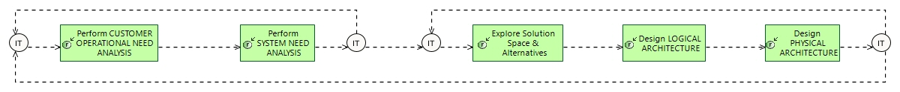

From Need to Solution
Engineering Process
Engineering Capabilities > Define a Solution satisfying Need > From Need to Solution
Challenge: How to build and justify an adequate Solution as an answer to a well understood Need .
- Clearly understand the end users need and the context of use of the system.
- Check requirements understanding and adequacy with them.
- Build a solution and check that it is compliant with these needs.
Related Diagrams
1 From Need to Solution

This figure describes
How to build and justify an adequate Solution as an answer to a well understood Need .
- Clearly understand the end users need and the context of use of the system.
- Check requirements understanding and adequacy with them.
- Build a solution and check that it is compliant with these needs.
For each step of this process, involving an engineering task or activity, the description gives some hints and methological recommendations. These recommendations are complementary with the description of the involved activity per se, in the context of the engineering concern and the process.
Contribution of each engineering activity to this process
| Engineering activity | Specifics of activity for this process |
|---|---|
|
|
Principles: Besides and before Requirement Management, drive an Operational Need Analysis, describing final user expectations & major conditions of operations. Focus on analysing the customer needs and goals, expected missions & activities, far beyond System requirements. This is expected to ensure good adequacy of System definition with regards to its real operational use – and prepare Qualification conditions. Outputs consist mainly in an ‘operational architecture’ describing and structuring this need, in terms of actors/users, their operational capabilities and activities, operational use scenarios giving dimensioning parameters, operational constraints including safety, security, system life cycle…. See also ' Explore Solution Space & Alternatives' |
|
|
Principles: Formalise Customer Requirements using a functional analysis approach to check their coherency, consistency and completeness, for sake of robustness and feasibility; take into account the former Operational Analysis, to ensure Usability. Focus now on the system itself, in order to define how it can satisfy the former operational need, along with its expected behaviour and qualities: system functions to be supported & related exchanges, non functional constraints (safety, security…), performances allocated to system boundary, role sharing and interactions between system and operators… Check also for feasibility (including cost, schedule and technology readiness) of customer requirements, and if necessary give means to renegotiate their contents. This may require, a first early system architecture, from system functional need; then requirements are confronted to this architecture in order to evaluate their cost and consistency. Outputs mainly consist of system functional Need description, interoperability and interaction with the users and external systems (functions, exchanges plus non-functional constraints), and system requirements. See also ' Explore Solution Space & Alternatives' |
|
|
also refers to 'Understand Context and Needs' and 'Analyse Needs and formalise Requirements' : First of all, we need to build with stakeholders (both internal and external) a shared vision of the goal, that is to say, a good understanding of what is at stake, where we would like to go, i.e. a rough shaping of the solution (whether it is a set of products or services, or a mix) where all major stakeholders are convinced that they reach a pretty good deal. To state this balanced target, in others word, a engineered value proposition, we have to rely on a certain amount of knowledge and to deal with uncertainty. Some of this knowledge is already built and should be reused accordingly; some come from other sources (inputs from others Chorus processes), but some need to be built within the orientation in order to comprehend the various contexts (business context, technological context, operational context). This requires distinguishing what really matters, the key topics and what really hurts, the critical topics, in order to focus our effort (usually the orientation activity uses resources sparingly) on important points of interest, postponing less important aspects until downstream activities. At this level, in terms of solution, only the main concepts and principles, forming the (high level, abstract) architecture should be addressed. Obviously, there is no one unique set of concepts or principles fitting the targeted solution, but a deliberate choice among a wider and multiple set. Thus the ideal reached architecture should not only be described, but also justified. Since orientation should also be seen as the top most upstream activity for all engineering activities, it should give some guidelines, and provide some strategic plan (part of e.g., the Engineering Plan, the IVVQ Plan…), to support further engineering activities. |
|
|
Principles: Structure system & build a notional (aka "logical") Architecture, by searching for best Compromise between [non-functional] Constraints & Viewpoints:
Identify the system parts (hereafter called components ), their contents, relationships and properties, excluding implementation or technical/technological issues. This constitutes the system logical architecture. In order for this breakdown in components to be stable in further steps, all major [non-functional] constraints (safety, security, performance, IVV…"Viewpoints") are taken into account so as to find the best compromise between them. Outputs consist of the selected logical architecture: components & interfaces definition, including formalisation of all viewpoints and the way they are taken into account in the components design. Since the architecture has to be validated against Need, links with requirements and operational functional chains and scenarios are also produced. |
|
|
Principles: Ease and secure development & IVVQ through a finalised (aka "physical") Architecture dealing with viewpoints, technical & development issues, favouring separation of concerns, efficient and safe components interaction through components integration contracts (e.g. layered architecture, generic behaviour & interaction patterns, component model). It defines the “final” architecture of the system at this level of engineering, ready to develop (by lower engineering levels). Therefore, it introduces rationalisation, architectural patterns, new technical services and components, according to implementation, technical & technological constraints & choices (at this level of engineering). Note that a‘Viewpoints-driven’ architecture justification method is used for physical architecture definition. Outputs consist of the selected physical architecture: components to be produced, including functional contents, behaviour, interfaces, complementary requirements, formalisation of all viewpoints and the way they are taken into account in the components design. Links with user and system need requirements and operational functional chains / scenarios are also produced. |